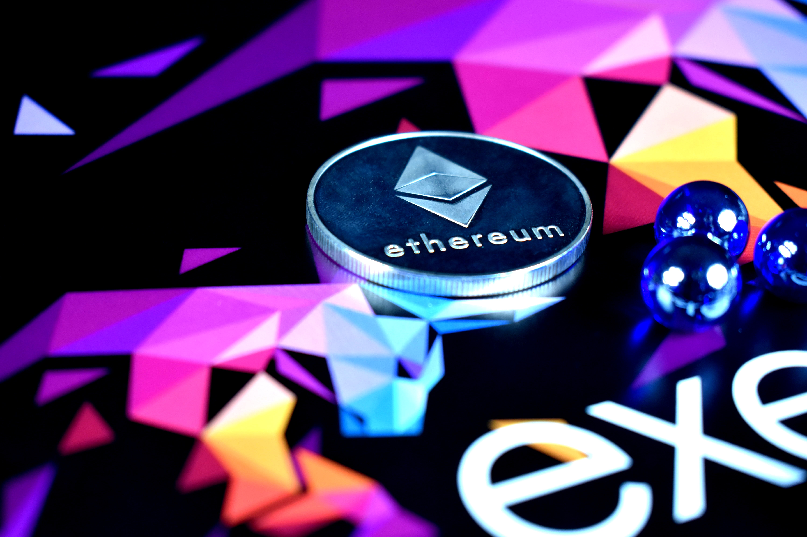

what is ethereum anyway?

이더리움(Ethereum)은 블록체인 기술을 기반으로 스마트 계약 기능을 구현하기 위
한 분산 컴퓨팅 플랫폼이다. 중국어로는 이타이팡(以太坊, yǐ tài fāng)이라고 한
다. 이더리움은 비트코인을 기반으로 만든 가장 대표적인 알트코인으로서, '비트코
인 2.0'이라고도 부른다. 이더리움이 제공하는 이더(Ether)는 비트코인과 마찬가지
로 암호화폐의 일종으로 거래되고 있다. 엄밀한 의미에서는 '이더리움'은 플랫폼이
고, '이더'가 암호화폐이지만, 일반적으로 양자를 구별하지 않고 '이더리움'을 암
호화폐의 이름으로 사용하기도 한다. 이더리움의 화폐 단위는 ETH이다. 2015년 7
월 비탈릭 부테린(Vitalik Buterin)이 C++과 고(Go) 언어로 개발했다. 이더해시
(Ethash) 알고리즘 기반의 작업증명(PoW) 방식으로 채굴 중이지만, 앞으로 작업증
명 방식을 벗어나 지분증명(PoS) 방식으로 변경할 예정이다.
계속 알아보세요!